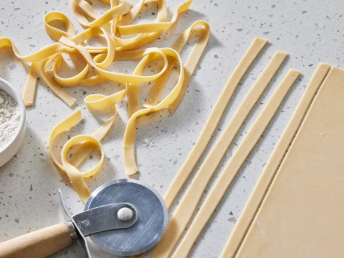

Recipe for Homemade Pasta

Description
Craft your own fresh pasta at home with this straightforward recipe. With just a few simple ingredients, you can create delicious, tender noodles perfect for any sauce. This recipe yields about 1 pound of pasta, serving 4 people.
Ingredients
- 2 cups all-purpose flour
- ½ teaspoon salt
- 2 large eggs
- 2 tablespoons water (as needed)
Instructions
- Combine flour and salt on a clean work surface or in a large bowl. Make a well in the center and add beaten eggs.
- Gradually mix the flour into the eggs, forming a stiff dough. Add water as needed to achieve the right consistency.
- Knead the dough on a lightly floured surface until smooth, about 3 to 4 minutes. Cover and let rest for 30 minutes to 1 hour.
- Divide the dough into portions and roll out to desired thickness using a rolling pin or pasta machine. Cut into desired shapes.
- Cook the pasta in boiling salted water for 2 to 3 minutes until al dente. Drain and serve with your favorite sauce.